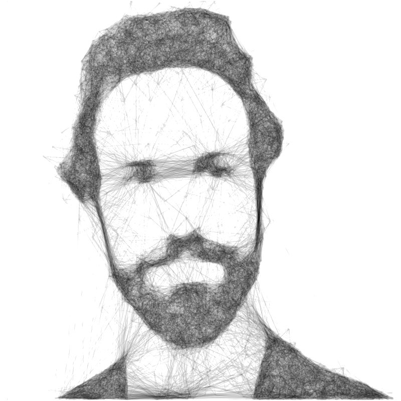

Since February 2025 I work as a Technology Specialist at the AI Safety unit of the European AI Office, established at the DG CONNECT of the European Commission.
Between August 2021 and January 2025 I was a postdoctoral researcher ("chargé de recherche") at the LISA laboratory of the Université Libre de Bruxelles (ULB), working with Prof. Christine Decaestecker on the evaluation of machine learning models and algorithms in the absence of a ground truth, such as in case of imperfect annotations or annotations provided by discording annotators.
I completed my PhD in November 2021 at IRIDIA under the supervision of Prof. Thomas Stützle.
My researched focused on using automatic configuration and design techniques to understand how heuristic algorithms work. In particular, I have used automatic methods and extensive experiments on different problems to understand the behaviour of metaheuristic algorithms, that is, to understand how a good metaheuristic for a certain problem looks like, and why.
I have proposed a general methodology with the introduction of a causal framework to relate the elements involved in the solution of an optimization problem, showing also how this conceptual representation can be useful to automatically infer good algorithms from past experiments that can perform well also for new problems.
From 11/2014 to 12/2017 my research was funded by the COMEX project.
With my colleagues I have also worked on applying automatic configuration methods to software systems such as compilers and databases.
From 02/2019 to 12/2020 I was a research scientist working with Prof. Hugues Bersini in an Innoviris-funded project about anomaly detection in Internet of Things (IoT) metadata in collaboration with Degetel Belgium.
Previously, I was research collaborator at the Department of Information Engineering of the University of Padova under the supervision of Prof. Barbara di Camillo and Dr. Francesco Sambo, developing the bnstruct (cran, repo) R package for learning Bayesian Networks (also) in presence of missing data.
In the same university, I completed my studies in Computer Engineering, obtaining my Masters's degree under the supervision of Prof. Silvana Badaloni and Dr. Francesco Sambo.
$ cat
Publications.bib
Some of the papers listed below are available in the institutional ULB repository as required by Belgian law, or as Technical Reports in the IRIDIA institutional repository in preliminary form. If you want to read a paper you don't have access to, send me an email.
Peer-Reviewed Journal Papers
- Alberto Franzin, Thomas Stützle. "A Causal Framework for Stochastic Local Search Optimization Algorithms". Accepted for publication in Computers and Operations Research, 2025.
- Alberto Franzin. "Empirical Analysis of Stochastic Local Search Behaviour: Connecting Structure, Components and Landscape". 4OR - A Quarterly Journal of Operations Research, 2022.
[Abstract of my PhD thesis, bib, online paper, PDF, DOI]
- Alberto Franzin, Thomas Stützle. "A Landscape-based Analysis of Fixed Temperature and Simulated Annealing". European Journal of Operational Research, 2022; 304(2), 395-410.
[Online paper, bib, DOI, Technical report, Supplementary Material]
- Moisés Silva-Muñoz, Alberto Franzin, Hugues Bersini. "Automatic configuration of the Cassandra database using irace". PeerJ Computer Science, 2021; 7:e634.
[Online paper, bib, DOI, Supplementary Material]
- Alberto Franzin, Thomas Stützle. "Revisiting Simulated Annealing: a Component-Based Analysis". Computers and Operations Research, 2019; 104, 191-206.
[bib, DOI, Supplementary Material]
- Alberto Franzin, Leslie Pérez Cáceres, Thomas Stützle. "Effect of Transformations of Numerical Parameters in Automatic Algorithm Configuration." Optimization Letters, 2018; 12(8), 1741-1753.
[bib, DOI, Supplementary Material]
- Alberto Franzin, Francesco Sambo, Barbara di Camillo. "bnstruct: an R package for Bayesian Network structure learning in the presence of missing data." Bioinformatics, 2017; 33 (8), 1250-1252.
[bib, DOI, free access PDF]
International Conference Full Papers
- Laura Gálvez Jiménez, Lucile Dierckx, Maxime Amodei, Hamed Razavi Khosroshahi, Natarajan Chidambaran, Anh-Thu Phan Ho, Alberto Franzin. "Computational Evaluation of the Combination of Semi-Supervised and Active Learning for Histopathology Image Segmentation with Missing Annotations." 2nd Workshop on Computer Vision for Automated Medical Diagnosis (CVAMD@ICCV), Paris, France, 2023.
[Online PDF, Poster PDF]
- Laura Gálvez Jiménez, Alberto Franzin, Christine Decaestecker. "Training Data Selection to Improve Multi-class Instance Segmentation in Digital Pathology." 10th International Conference on Bioinformatics Research and Applications (ICBRA), Barcelona, Spain, 2023.
- Gianluca Rizzo, Alberto Franzin, Miia Lillstrang, Guillermo Del campo, Moisés Silva-Muñoz, Lluc Bono, Mina Aghaei Dinani, Xiaoli Liu, Joonas Tuutijarvi, Satu Tamminen, Edgar Saavedra, Asuncion Santamaria, Xiang Su and Juha Röning. "ABIDI: A Reference Architecture for Reliable Industrial Internet of Things." 37th International Conference on Advanced Information Networking and Applications (AINA-2023), Juiz de Fora, Brazil, 2023.
- Moisés Silva-Muñoz, Gonzalo Calderon, Alberto Franzin, Hugues Bersini. "Determining a consistent experimental setup for benchmarking and optimizing databases." 6th Workshop on Industrial Application of Metaheuristics (IAM@GECCO), 2021.
[bib]
- Alberto Franzin, Raphaël Gyory, Jean-Charles Nadé, Guillaume Aubert, Georges Klenkle, Hugues Bersini. "Philéas: Anomaly Detection for IoT Monitoring." 32nd BeNeLux Conference on Artificial Intelligence / 29th Belgian-Dutch Conference on Machine Learning (BNAIC/BeNeLearn 2020), 2020.
[bib, PDF, Conference Proceedings, Video Presentation]
- Leslie Pérez Cáceres, Federico Pagnozzi, Alberto Franzin, Thomas Stützle. "Automatic configuration of GCC using irace." 13th International Conference on Artificial Evolution (EA2017), 2017.
[bib, Conference Proceedings, TechRep]
- Alberto Franzin, Thomas Stützle. "Comparison of Acceptance Criteria in Randomized Local Searches." 13th International Conference on Artificial Evolution (EA2017), 2017.
[bib, Conference Proceedings, TechRep]
- Alberto Franzin, Thomas Stützle. "Exploration of Metaheuristics Through Automatic Algorithm Configuration Techniques and Algorithmic Frameworks." 6th Workshop on Evolutionary Computation for the Automated Design of Algorithms (ECADA@GECCO), 2016.
[bib, TechRep]
- Francesco Sambo, Barbara Di Camillo, Alberto Franzin, Andrea Facchinetti, Liisa Hakaste, Jasmina Kravic, Giuseppe Fico, Jaakko Tuomilehto, Leif Groop, Rafael Gabriel, Tiinamaija Tuomi, Claudio Cobelli. "A Bayesian Network analysis of the probabilistic relations between risk factors in the predisposition to type 2 diabetes." 37th Annual International Conference of the IEEE Engineering in Medicine and Biology Society (EMBC), 2015.
[bib]
International Conference Extended Abstracts
- Stefano Michelini, Renaud De Landtsheer, Moisés Silva-Muñoz, Alberto Franzin, Augustin Delecluse. "Bandit Algorithms for Neighborhood Selection in Local Search." 38th Annual Conference of the Belgian Operational Research Society (ORBEL38), Antwerp, Belgium, 2024.
[Book of Abstracts (15MB PDF file)]
- Alberto Franzin, Thomas Stützle. "A causal framework for optimization algorithms." 5th AIRO Young Workshop, Naples, Italy (online), 2021.
[Abstracts]
- Alberto Franzin, Thomas Stützle. "Towards transferring algorithm configurations across problems." Learning Meets Combinatorial Algorithms Workshop (LMCA@NeurIPS2020), Vancouver, Canada (online), 2020.
[Extended Abstract, Workshop Presentation]
- Alberto Franzin, Thomas Stützle. "A causal framework for understanding optimisation algorithms." Stochastic Local Search Workshop (SLS@PPSN2020), Leiden, Netherlands (online), 2020.
- Alberto Franzin, Thomas Stützle. "A causal framework to understand optimisation algorithms." Foundations of Trustworthy AI - Integrating Learning, Optimization and Reasoning (TAILOR@ECAI2020), Santiago de Compostela, Spain (online), 2020.
[Extended Abstract, Workshop Presentation, Extended Presentation]
- Alberto Franzin, Thomas Stützle, Leslie Pérez Cáceres, Manuel López-Ibáñez. "The irace package for automatic algorithm configuration: recent developments." Operations Research 2018 Conference (OR2018), Brussels, Belgium, 2018.
[Abstracts]
- Alberto Franzin, Thomas Stützle. "A component-based analysis of Simulated Annealing." Operations Research 2018 Conference (OR2018), Brussels, Belgium, 2018.
[Abstracts]
- Alberto Franzin, Thomas Stützle. "A component-based analysis of Simulated Annealing." Optimization and Decision Science Conference (ODS2017), XLVII Annual Meeting of AIRO - Italian Operations research Society, Sorrento, Italy, 2017.
[Abstracts]
- Alberto Franzin, Thomas Stützle. "Revisiting Simulated Annealing: From a Component-Based Analysis to an Automated Design of Simulated Annealing Algorithms." 12th Metaheuristics International Conference (MIC), Barcelona, Spain, 2017.
[Proceedings]
- Alberto Franzin, Francesco Sambo, Barbara Di Camillo. "bnstruct: R package for Bayesian Network Structure Learning in the presence of Missing Data." 25th Belgian-Dutch Conference on Machine Learning (BeneLearn), Kortrijk, Belgium, 2016.
Book Chapters
- Alberto Franzin, Thomas Stützle. "Simulated Annealing". In: Leandro L. Minku, George Cabral, Marcella Martins, Markus Wagner. "Introduction to Computational Intelligence", 2023, first edition.
[Open Book Webpage, Book PDF, DOI, Complete package, Book Repository, Discussions]
Theses
- "Empirical Analysis of Stochastic Local Search Behaviour: Connecting Structure, Components and Landscape". PhD thesis, IRIDIA, ULB, 2021.
[bib, Institutional repository,
PDF]
- "An Integer Programming approach to Bayesian Network Structure Learning." Master's thesis, DEI-UniPD, 2014.
[PDF]
$ cat
Teaching.txt
Teaching Assistant for Heuristic Optimization INFO-H-413, prof. Thomas Stützle, a.y. 2017/18, Swarm Intelligence INFO-H-414, optimization part (ACO, PSO), prof. Marco Dorigo, a.y. 2015/16.
Teacher for the Bouygues/Objenious IoT Challenge Week at CentraleSupélec, Paris-Saclay campus, June 2019.
Co-supervisor of three master theses at ULB.
$ cat
Service.txt
Member of the doctoral committe of Moisés Silva Muñoz (ULB), thesis defended publicly on 29/12/2023.
Organization Committee for Matheuristics 2016.
Program Committee for GECCO
(2015,
2016,
2017,
2018,
2019,
2020,
2021,
2022,
2023,
2024 (outstanding reviewer for the SI track),
2025),
IAM
(GECCO workshop, 2016,
2017,
2019,
2020,
2021,
2022,
2023,
2024),
ECXAI (GECCO workshop, 2022,
2023),
CEC
(2017,
2018,
2019,
2020,
2021,
2022,
2023),
EvoCOP (2023),
IEEE CAI (2024),
ECAI (2024).
Reviewer for Statistical Applications in Genetics and Molecular Biology,
Computers and Operations Research,
Computational Intelligence,
International Transactions in Operational Research,
European Journal of Operational Research,
INFORMS Journal on Computing,
Theoretical Computer Science,
Journal of Scheduling,
IEEE Journal of Biomedical and Health Informatics,
PeerJ Computer Science,
Fire Safety Journal,
Journal of Statistical Software,
Engineering Applications of Artificial Intelligence,
Intelligenza Artificiale,
Applied Soft Computing.
I was part of the Data Ambassador program of the Fédération Wallonie-Bruxelles (FWB) for the academic years 2021/22/23.
Office address: AI Office, DG CONNECT, European Commission,
Rue de la Loi 51,
1040 Brussels, Belgium
Mail address: name followed by surname (with a dot in between) at ec dot europa dot eu
Some code on GitHub.
Google Scholar profile.
List of publications on DBLP.
ResearchGate profile.
LinkedIn profile.
ORCID profile.
Last update: 2025.03.04